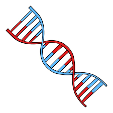
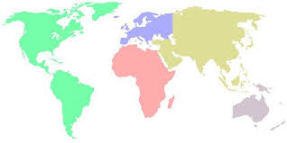
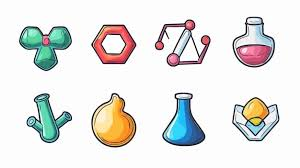
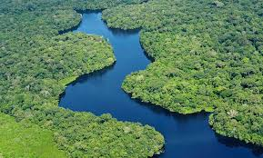

Formulario de Preguntas
1. ¿Cuál es la capital de Francia?
París
Londres
Berlín
2. ¿Qué es el ADN?

Ácido desoxirribonucleico
Ácido ribonucleico
3. ¿Cuántos planetas hay en el sistema solar?
7
8
9
4. ¿Cuál es el continente más grande?

Asia
África
America
Oceania
5. ¿Qué elemento químico tiene el símbolo O?

Mercurio
Azufre
Oxígeno
Oro
6. ¿Cuáles son los colores de la bandera de España?
Rojo
Amarillo
Verde
7. ¿Quién escribió "Cien años de soledad"?
Stephen King
William shakespeare
Gabriel García Márquez
Julio Cortázar
8. ¿Cuál es el río más largo del mundo?

Misisipi
Nilo
Amazonas
Enviar